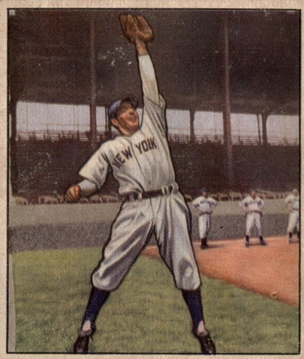

Phil Rizzuto "The Scooter"
Career Highlights & Facts
(Facts are AI-generated and may require verification)
- Won a league Most Valuable Player award.
- Spent 40 years as a broadcaster after a playing career that included 7 World Series titles.
- Earned a reputation for being an elite defensive shortstop despite being told early on that a small stature made a professional career impossible.
Would you like to find out more about Phil Rizzuto?
Player Biography
Phil Rizzuto January 4, 2012 / in BioProject - Person Hall of Fame , Most Valuable Player 1940s All-Stars , 1950s All-Stars Broadcasters 1947 New York Yankees / by admin This article was written by Lawrence Baldassaro When Phil Rizzuto went to his first Major League tryout, a New York Giants coach told him he was too small to play in the big leagues and suggested he should make a living by shining shoes. 1 But in a later tryout with the Yankees, Rizzuto impressed scout Paul Krichell , who recommended they sign the Brooklyn native. The five-foot-six, 150-pound shortstop went on to become the anchor of the infield for Yankees teams that won nine pennants and seven World Series in his twelve full seasons. He also won a Most Valuable Player award, was enshrined in the Hall of Fame, and spent forty years as the voice of the Yankees on radio and television. Philip Francis Rizzuto was born in Brooklyn on September 25, 1917, to Fiore and Rose (Angotti) Rizzuto. (His mother was born in Italy, his father in the U.S.) In a 1993 interview Rizzuto spoke animatedly of his family and his childhood in Brooklyn. “They were laborers,” he said. “They built homes, they built sidewalks, they built garages, in New York City and out in Long Island. They all moved into these three-family houses that were connected to each other with a little alleyway and a backyard. It was one of the greatest times of my life because they all played musical instruments; they’d sing, they’d tell stories in Italian, they’d make wine. As long as there was food on the table, everyone was happy.” 2 Eventually, his father got a job as a motorman on a trolley car, and later as a watchman on the docks. The Rizzutos baptized their son as Fiero, but Rizzuto chose to call himself Phil, same as his father. “I just took Phil because it sounded more American,” he once said. “A ballplayer has to be as American as the Statue of Liberty, is the way I figure.” 3 Even as a kid, Rizzuto had to overcome the perception that he wasn’t big enough to be a ballplayer. “More than 50 percent of the time nobody would pick me because I was so small,” he said. He began to prove himself in earnest while playing for Richmond Hill High School in Queens. By the summer before his senior year he was good enough to play for a semipro team (under an assumed name). “That was better than any Minor League experience,” he said. “I batted against Satchel Paige , the House of David, the Black Yankees. These guys, they knew how to play the game. So many of them could have been in the big leagues, but because of the color line, you know. . . .” Like so many Italian fathers, Fiore Rizzuto thought baseball was a waste of time and never wanted his son to play. “He wanted me to get a job, to follow in his footsteps,” recalled Rizzuto. “He said, ‘You can’t make a living playing baseball.’” When Mrs. Rizzuto supported her son’s desire to play ball, his father finally relented. Signed by the Yankees in 1937, Rizzuto was assigned to the Bassett (Virginia) Furnituremakers, in the Class D Bi-State League. When he first arrived in Virginia, the nineteen-year-old city-reared Rizzuto felt out of place. “I get off the train and there’s nothing there. I said, ‘Where the hell is the town?’ Then the train pulled away and there was the town. There was a drugstore, a post office, and a diner. They had only thirteen hundred people in the whole town. The people were so nice, but they couldn’t understand me with my Brooklyn accent, and I couldn’t understand them with their Southern accent.” Once acclimated, Rizzuto moved quickly through the Yankees farm system. After hitting .336 at Norfolk in the Piedmont League in 1938, he was sent to Kansas City of the American Association. (It was while he was playing for Kansas City that teammate Billy Hitchcock gave the quick-footed shortstop his trademark nickname of Scooter.) Rizzuto continued to excel in his two years at Kansas City; in 1940, after getting 201 hits for a .347 batting average, he was the MVP of the American Association and was named Minor League Player of the Year by The Sporting News. Rizzuto was slated to be the Yankees starting shortstop in 1941 after Frank Crosetti , the starter since 1932, hit only .194 in 1940. But in spite of Rizzuto’s credentials, the Yankees veterans resented the rookie who threatened to replace the popular Crosetti. Players tried to keep him out of the batting cage until Joe DiMaggio intervened and told them to let the kid hit. “I had a rough time,” Rizzuto recalled. “Crosetti was one of their big favorites and a great guy, and here I was a fresh rookie trying to take his job.” The twenty-three-year-old rookie did replace Crosetti in the starting lineup when the 1941 season began. Crosetti himself was more supportive of his replacement than his teammates had been initially. Rizzuto recalled how the veteran helped position him in his very first game, against the Washington Senators. “If it hadn’t been for Crosetti, I’d have looked like a bum. He made me look great.” Given the chance, Rizzuto showed that he belonged; he hit .307, second only to DiMaggio’s .357 among Yankees players. Then, in 1942, he hit .284, was named to the All-Star team and led American League shortstops in double plays and putouts. He hit .381 in the Yankees’ five-game World Series loss to the St. Louis Cardinals. Like so many other major leaguers, Rizzuto then spent the next three years in the service, initially playing baseball at the Naval Training Station in Norfolk, Virginia. It was there that, in June 1943, he married Cora Esselborn. He recalled the first time he met her, at her parents’ home in Newark during his rookie year. “I saw this vision of loveliness come down the stairs, and you know how they say in the movies, it was love at first sight. I’d never dated a girl. Holy Cow, I was struck.” In 1944 he was sent to New Guinea and assigned to lead a gun crew on a ship, but his naval combat duty was hampered by malaria and chronic seasickness. He was then mercifully assigned to organize sports programs in Australia and the Philippines. Upon returning from the war, Rizzuto was recruited by the Mexican League, which was making a strong attempt to lure ballplayers away from the Major Leagues. Early in May 1946, Jorge Pasquel , a wealthy industrialist who was president of the league, offered Rizzuto $12,000 a year for a five-year contract, plus a $15,000 signing bonus. 4 “Right after the war,” said Rizzuto, “you couldn’t get a car, you couldn’t get tires, you couldn’t get butter, you couldn’t get anything. They had everything . I was ready to go, and so was George [Stirnweiss] .” The Yankees, however, filed a lawsuit to enjoin the Mexican League from inducing their players to jump their contracts. After a disappointing season in 1946, both for the Yankees (who finished third) and Rizzuto (whose average dropped to .257), the Scooter bounced back in 1947, hitting .273 and driving in sixty runs. He led the Yankees in games played and stolen bases, and led the league in being hit by pitches. In the memorable World Series with the Dodgers—the first of six “Subway Series” matching the interborough rivals between 1947 and 1956—Rizzuto went 5-for-22 in the first six games, scoring one run and driving in another. (According to the New York Times , the diminutive shortstop had trouble getting into Ebbets Field for Game Three. A police officer reportedly told him: “Go on, beat it. You can’t even play first for a midget team.”) 5 But in the deciding seventh game , Rizzuto played a key role. With the Yankees trailing, 2–0, he drove in their first run in the bottom of the second with a two-out single. In the fourth, with a man on first, he again hit a two-out single, sending the runner to second. He went to third when Bobby Brown hit a game-tying double, then scored what proved to be the winning run on a single by Tommy Henrich . In the sixth, he led off with a bunt single, stole second, then scored on a single to make the score 4–2. The Yankees went on to clinch the Series with a 5–2 win. Of the Yankee starters, only Johnny Lindell (.500) and Henrich (.323) hit for a higher average than Rizzuto (.308). After a solid but unspectacular 1948 season, Rizzuto had the two best years of his career. In 1949 he hit .275, scored 110 runs, and finished second to Ted Williams in the MVP vote. He followed that performance with his single best season, with career highs in hits, average, slugging percentage, runs, doubles, and walks. At one point, he handled 238 consecutive chances at shortstop without an error, a Major League record at that time. Rizzuto was named the American League’s MVP in 1950, winning sixteen of twenty-three first-place votes and easily outdistancing Billy Goodman of the Boston Red Sox, 284 points to 180. In its story, the New York Times referred to Rizzuto as “the dashing little shortstop, widely hailed as the ‘indispensable man’ of the world champion Bombers . . .” 6 He also won the first S. Rae Hickock Award as the Professional Athlete of the Year. In December Rizzuto signed a one-year contract for $50,000, making him the third-highest-paid player in Yankees history behind Ruth and DiMaggio. Beginning in 1950, Rizzuto was named to four consecutive All-Star teams, starting at shortstop in 1950 and 1952. He finished eleventh in the MVP vote in 1951, fourteenth in 1952, and sixth in 1953. But in 1954, he hit only .195 and the following year, now thirty-seven years old, he played only seventy-nine games at shortstop. On August 25, 1956, Rizzuto, who had appeared in only thirty-one games with fifteen starts, was told by general manager George Weiss that he was being released to make room on the roster for Enos “Country” Slaughter , one of the many veteran players the Yankees bought in those years to patch a hole in their lineup. It was an abrupt and unceremonious end to the thirteen-year career of a player who had become synonymous with the Yankees. The news came as a shock to Rizzuto, the consummate company man. “I couldn’t believe it,” he told me. “The pinstripes meant so much then. It was something to live up to and live for.” The man who had been dismissed as being too small had become one of the best shortstops of his era and played in five All-Star games and nine World Series for one of the greatest teams of all time. But now, his playing days suddenly over, the thirty-nine-year-old Scooter began a new career as a Yankees broadcaster, initially teaming up with two other legends, Mel Allen and Red Barber . With his rambling, stream-of-consciousness style, featuring his trademark call of “Holy Cow,” he entertained Yankee fans for forty years and endeared himself to a new generation. In 1993 his on-air musings were transcribed into free verse in O Holy Cow! The Selected Verse of Phil Rizzuto . In a review of the book, poet Robert Pinsky, alluding to the equally idiosyncratic linguistic stylings of Yogi Berra and Yankee manager Casey Stengel , wrote: “Mr. Rizzuto now joins Mr. Berra and the creator of Stengelese in a New York School of diamond-oriented language manipulators.” 7 The 1984 selection of Pee Wee Reese to the Hall of Fame by the Veterans Committee led some to argue that Rizzuto was no less deserving than his Dodger counterpart. Finally, on February 25, 1994, Rizzuto got the call from Yogi Berra, a member of the Veterans Committee, telling him he was in. Rizzuto’s response? “Holy Cow!” Questions about Rizzuto’s Hall of Fame qualifications always centered on his modest hitting statistics. Meanwhile, supporters pointed to his intangible value as the sparkplug of teams that won nine pennants and seven World Series in his twelve full seasons, and his remarkable defensive skills. He had great range, was exceptionally skillful at going back on popups, and was a fearless and agile pivot man on double plays. Jerry Coleman , who played alongside Rizzuto for parts of eight seasons, said of his double play partner: “He didn’t have a great arm, but he had a great pair of hands and he never made a mistake. . . . The only other shortstops I’d put in his class were Ozzie Smith and Luis Aparicio .” 8 Casey Stengel, with whom Rizzuto had an increasingly uneasy relationship because of what he perceived as the manager’s preference for younger players, called him “the greatest shortstop I ever saw. He can’t hit with Honus Wagner , but I’ve seen him make plays that old Dutchman couldn’t.” 9 On teams that featured DiMaggio, Berra and, later, Mantle , the little guy at short never threatened to steal the spotlight; but he was, according to New York Times columnist Arthur Daley, “. . . a key man in every Yankee pennant drive since 1941.” 10 Phil Rizzuto was one of the most popular players of his era, with both fans and teammates. Initially shunned at the start of his rookie year, Rizzuto soon won over his teammates with his boyish enthusiasm and willingness to be the butt of their pranks. As scrappy as he was on the field, Rizzuto had an almost manic fear of creepy, crawly things, which only served to make him a more inviting target. “They were always playing tricks on him,” said Coleman. “Once [outfielder] Johnny Lindell put a dead mouse in his glove (when infielders still left their gloves on the outfield grass between innings). He put the glove on, then threw it in the air and ran into center field screaming.” 11 According to Daley, the Yankees “may never have had a more popular player than this little guy, admired and beloved even by those pranksters who used to put snakes in his glove.” 12 By the time he retired from broadcasting in 1996, the seventy-nine-year-old Rizzuto had logged fifty-three year of service to the Yankees, more than anyone else in the history of the franchise. In 1985 the Yankees retired his number 10 and added his plaque to those in Yankee Stadium ’s Monument Park. In his characteristically rambling but hilarious Hall of Fame acceptance speech in 1994, Rizzuto said: “I’ve had the most wonderful lifetime that one man could possibly have.” He died on August 13, 2007, survived by his widow Cora (since deceased), and their four children. Sources Creamer, Robert. Stengel: His Life and Times . 1984. Lincoln: University of Nebraska Press, 1996. DeVito, Carlo. Scooter: The Biography of Phil Rizzuto . Chicago: Triumph Books, 2010. Hirshberg, Dan. Phil Rizzuto: A Yankee Tradition . Champaign, Illinois: Sagamore Publishing, 1993. Peyer, Tom, and Seely Hart, eds. O Holy Cow! : The Selected Verse of Phil Rizzuto . Hopewell, New Jersey: Ecco Press, 1993. Schoor, Gene. The Scooter: The Phil Rizzuto Story. New York: Scribner, 1982. New York Times Book Review Author interview with Jerry Coleman, September 1, 2005. Author interview with Phil Rizzuto, June 12, 1993. Notes 1 In a personal interview with the author on June 12, 1993, Rizzuto attributed the comment to Dodgers manager Casey Stengel, but Stengel was not in New York when the incident occurred. In a Sporting News interview (May 1, 1941), Rizzuto cited a Giants coach as the source of the comment. In his biography of Rizzuto ( The Scooter , p. 7), Gene Schoor identified the coach as Pancho Snyder . 2 Phil Rizzuto, personal interview, June 12, 1993. Unless otherwise noted, all quotations by Rizzuto are from this interview. 3 The Sporting News , May 1, 1941, 4. 4 According to testimony by Bernardo Pasquel, New York Times , June 9, 1946. 5 New York Times , October 4, 1947. 6 New York Times , October 27, 1950. 7 New York Times Book Review , April 4, 1993, 26. 8 Jerry Coleman, personal interview, September 1, 2005. 9 Robert Creamer, Stengel: His Life and Times . 1984. Lincoln: University of Nebraska Press, 1996, 237. 10 New York Times , September 19, 1955. 11 Jerry Coleman, personal interview, September 1, 2005. 12 New York Times , September 19, 1955. Full Name Philip Francis Rizzuto Born September 25, 1917 at Brooklyn, NY (USA) Died August 13, 2007 at West Orange, NJ (USA) Stats Baseball Reference Retrosheet Oral History If you can help us improve this player’s biography, contact us . Tags Hall of Fame · Most Valuable Player · 1940s All-Stars · 1950s All-Stars · Broadcasters · 1947 New York Yankees Share this entry Share on Facebook Share on X Share on LinkedIn Share on Reddit Share by Mail
Career Totals
| WAR | AB | H | HR | BA | R | RBI | SB | OBP | SLG | OPS | OPS+ |
|---|---|---|---|---|---|---|---|---|---|---|---|
| 42.2 | 5816 | 1588 | 38 | .273 | 877 | 563 | 149 | .351 | .355 | .706 | 93 |
Statistics via Baseball-Reference.com
The Original Clue